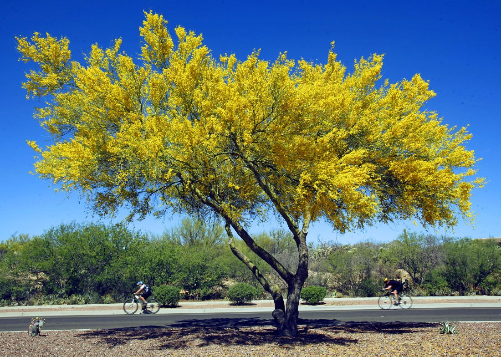

Arizona, the Grand Canyon state, achieved statehood on February 14, 1912, the last of the 48 coterminous United States to be admitted to the union. Originally part of Spanish and Mexican territories, the land was ceded to the United States in 1848, and became a separate territory in 1863. Copper was discovered in 1854, and copper mining was Arizona’s premier industry until the 1950s. After World War II, the widespread availability of refrigeration and air conditioning caused Arizona’s population to boom and Phoenix to become one of the fastest growing cities in America. Arizona is the sixth largest state in the country in terms of area. Its population has always been predominantly urban, particularly since the mid-20th century, when urban and suburban areas began growing rapidly at the expense of the countryside. Some scholars believe that the state’s name comes from a Basque phrase meaning “place of oaks” while others attribute it to a Tohono O’odham (Papago) Indian phrase meaning “place of the young (or little) spring.
| Date of Statehood | Capital | Population | Size |
|---|---|---|---|
| February 14, 1912 | Phoenix | 7.15 million | 113,990 square miles |
Ditat Deus (“God enriches”)
Saguaro Cactus Blossom
Cactus Wren
Palo Verde
Interesting facts